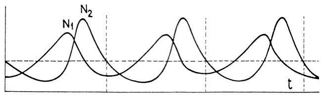
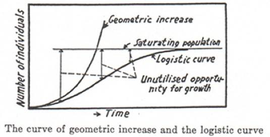
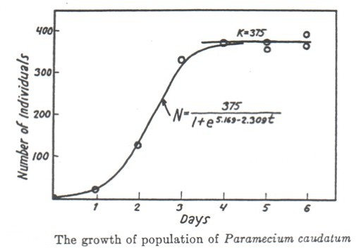
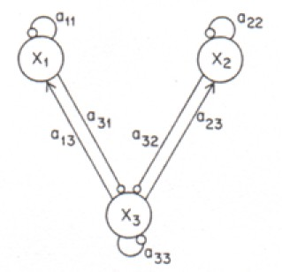

Ecology
The science of ecology studies interactions between individual organisms and their environments, including interactions with both conspecifics and members of other species. Though ecology emerged in the 19th century much of its theoretical structure only emerged in the twentieth century. Though ecology includes a wide variety of sub-fields, philosophical analysis of ecology has so far been restricted to population, community, and ecosystem ecology. Central philosophical problems include explication of relevant notions of ecological diversity and stability the relation between diversity and stability. Other debated questions are the nature of laws and theories in ecology, strategies of model-building, and reductionism. Contemporary ecology is undergoing a conceptual upheaval because of increased computational power. The recent emphasis on individual-based models, which embrace methodological individualism, should be viewed as a return of reductionism in ecology. Other important developments include widespread interest in spatially explicit models and the advent of Geographical Information Systems.
- 1. Introduction
- 2. Population Ecology
- 3. Community Ecology
- 4. Ecosystem Ecology
- 5. New Directions
- 6. Concluding Remarks
- Bibliography
- Academic Tools
- Other Internet Resources
- Related Entries
1. Introduction
The term “ecology” was coined by the German zoologist, Ernst Haeckel, in 1866 to describe the “economies” of living forms.[1] The theoretical practice of ecology consists, by and large, of the construction of models of the interaction of living systems with their environment (including other living systems).[2] These models are then tested in the laboratory and the field. (Field-work in ecology also consists of data collection that need not be inspired by any theory.)
Theory in ecology consists of the heuristics—or principles—used to construct models. Unlike evolutionary theory, ecology has no generally accepted global principles such as Mendel's (and other) rules of genetic inheritance.[3] Contemporary ecology consists of a patchwork of sub-disciplines including population ecology, community ecology, conservation ecology, ecosystem ecology, metapopulation ecology, metacommunity ecology, spatial ecology, landscape ecology, physiological ecology, evolutionary ecology, functional ecology, and behavioral ecology. What is common to all these fields is the view that: (i) different biota interact in ways that can be described with sufficient precision and generality to permit their scientific study; and (ii) ecological interactions set the stage for evolution to occur primarily because they provide the external component of an entity's fitness. The latter aspect makes ecology a central part of biology.[4] As van Valen once put it: “evolution is the control of development by ecology.”[5] However, the creation of a unified theoretical framework for evolution and ecology remains the task for the future and will be of no further concern in this entry.
Turning to the philosophy of ecology, beyond those interpretive and conceptual problems that arise because of the evolutionary context, ecology also presents interpretive and philosophical problems from its own unique conceptual structure and experimental practices. In this entry, attention will largely be restricted to population, community, and ecosystem ecology since these have been the focus of the little philosophical attention that has so far been afforded to ecology; there will also be some limited treatment of spatial ecology (in Section 5.2). However, because ecology has not received the degree of professional philosophical attention it deserves—while popular “ecological philosophies” abound—this entry concentrates more on foundational and interpretive issues raised by the science of ecology rather than only on what philosophers have written about the subject.
This entry treats experimental and theoretical work simultaneously with a bias in favor of those theoretical results that are unambiguously testable. It was once commonplace for even ecologists to accuse ecological theory of untestability.[6] This criticism was not completely fair even in the past; moreover, both experimental and theoretical developments during the last few decades have removed much of its force. Instead, what ecology poses is a much more philosophically intriguing set of seven problems:
i. the formalization indeterminacy problem: apparently informally clear hypotheses can be translated into radically different formal counterparts. If one of these formal models turns out to be empirically incorrect, there is the danger that the original informal hypothesis will be rejected even though some other formalization may have saved the phenomena; ii. the interpretation indeterminacy problem: parameters in well-confirmed models can be interpreted in mutually exclusive ways; iii. the structural uncertainty problem: differences in theoretical assumptions and techniques make enormous predictive differences;[7] iv. demarcation ambiguity problem: the classification of models presents inordinate difficulties because the boundaries demarcating different ecological sub-disciplines is often unclear. Obviously, this problem is more a concern of philosophers (and others interpreting ecology) rather than of ecologists.
Some typical examples of all these largely theoretical problems will be pointed out later in this entry. Fieldwork, on which all empirically sound ecological theory should presumably be based, poses an additional problem:
v. the partial observability problem: even the most basic parameters are often difficult to estimate accurately. One consequence is that many ecological models are often difficult to test in the field.
Finally, many philosophers and some ecologists have also argued that ecological experimentation is confronted with two additional problems:
vi. the complexity problem: ecological systems are supposed to be not merely complicated, they are “complex.” While much has been written about an alleged new science of complexity in recent years, no compelling operational distinction has yet been presented to distinguish complexity from complicatedness. In general, complex systems are supposed to exhibit “emergent” properties, that is those that, in some sense or other, resist reductionist explanation. The question of reductionism in ecology will be briefly discussed in this entry. Beyond that, no stance will be taken on the complexity versus complicatedness issue;[8] vii. the uniqueness problem: ecological systems are supposed to be unique both because they are contingent historical entities, and structurally because of their complexity. By itself being a historical entity does not present any problem for scientific study: planets and galaxies are historical entities successfully studied by astronomers. However, ecological systems are supposed to have histories that result in highly contingent structures—part of their complexity—that make them special.
The last two problems often preclude the use of laboratory experiments and model systems as a guide to what should happen in the field. Moreover, according to skeptics, they are an impediment to the replication of field experiments: the extent to which this is a serious obstacle to ecological experimentation remains controversial. These two problems will lurk in the background of all the discussions here.
There are also many other general philosophical problems about science that also occur in the ecological context, for instance, the role of idealizations, models, and so on. But ecology does not seem to make any unique contribution to these problems—they will be ignored here in the interest of focusing on ecology per se. The aim of this entry is to describe—in broad terms—the type of philosophical questions raised by different areas of ecology so as to encourage further philosophical work. No general conclusions will be drawn from the various cases because none seem feasible at present.
2. Population Ecology[9]
The golden age of theoretical ecology (1920-1940)—to borrow the title of a book edited by Scudo and Ziegler—consisted primarily of population ecology.[10] The next generation saw a shift of theoretical interest to community ecology. In recent years, interest has reverted to population ecology, sometimes in the form of metapopulation models (consisting of a set of populations with migration between them). Models in population ecology are based on representing an ecological system as the set of populations (of the same or different species) it consists of. Each population, in turn, consists of potentially interacting individuals of a species. Populations may be characterized by their state variables (parameters representing properties of the population as a whole, for instance, size, density, growth-rate, etc.) or by individual variables, that is, the properties of the individuals in them (for instance, individual fecundity, interactions, etc.).[11] Classical population ecology was restricted to the study of state-based models primarily because of the requirement that models be tractable, so as to permit predictions and explanations.[12] State-based models will be the focus of this section; individual-based models will be discussed in Section 5.1. Classical population ecology is the part of ecology that is theoretically the most developed. The central issue of interest in population ecology is the change in the size of populations (their “abundances”) over time.
Population ecology considers both deterministic and stochastic models. Much of philosophical writing on population ecology has been restricted to deterministic population models and this relatively large body of work will only be very briefly summarized. More attention will be paid to stochastic models which raise much more interesting philosophical issues that have not been adequately explored.
2.1 Deterministic Models
If population sizes are large, they can be studied using deterministic models, that is, fluctuations in populations sizes due to chance factors (such as accidental births and deaths) can be ignored. Usually a model considers members of a single or a very few interacting species, for instance, a few predator and a prey species.[13] A typical result, based on the Lotka-Volterra (coupled differential equations) model, is that predator-prey interactions lead to population cycles, with the predator population cycle temporally tracking the prey population cycle. The explanation of this phenomenon is straightforward: as prey populations increase, the increased availability of resources allows a rise in predator populations a little later in time. But the increase of predators leads to an increase of prey consumption and, consequently, a decrease in prey populations. But, now, the lack of resources leads to a decline of predator populations. As predator populations decline, prey populations increase initiating the cycle once again. See Figure 1:

Figure 1: Predator-Prey Population Cycles:
The model is due to Volterra ([1927] 1978, pp. 80-100, the diagram is from p. 100). There are two species, a predator species with a population, N2, which only feeds on a single prey species with population, N1. The model incorporates demographic stochasticity which, nevertheless, does not stamp out the basic cyclic pattern. (t is a measure of time.)
The Lotka-Volterra model mathematically predicts these cycles. As such, it exemplifies the explanatory ideal of ecology: not only is there a predictively accurate quantitative model, but the mechanisms incorporated in the model have a perspicuous biological interpretation. Unfortunately, in ecology, because of the formalization and interpretation indeterminacy problems, the last condition is rarely satisfied.
For the simpler case of single species, two standard models are that of exponential and logistic growth. The exponential growth model is supposed to capture the behavior of a population when there is no resource limitation; the logistic growth model is one of the simplest ways to try to capture the self-regulation of population sizes when there is such a limitation.[14] See Box 1.1 and 1.2.
Let a population consist of n individuals at time t. Suppose that, in an infinitesimal time interval between t and t+dt, a fraction b/n of individuals give birth and a fraction d/n die. Let the change in the size of the population be dn. Then
dn/dt = (b − d).
Let r = b − d. Then the population dynamics is described by the growth equation:
dn/dt = m.
This is the exponential growth model. It assumes that no resource limitation constrains the "intrinsic growth rate", r. It can be solved to give:
n(t) = n0ert,
where n0 is the size of the population at t0.
One way to modify the exponential growth model to incorporate resource limitation is to replace the growth equation of the exponential model by that of the logistic growth model:
dn/dt = m(1 − n/K),
where K is called the "carrying capacity" of the environment; this parameter is supposed to incorporate how resource limitation affects population growth by regulating it. When n = K, the growth rate,
dn/dt = 0
and the population does not grow any further. Moreover, when there is no resource limitation, that is K → ∞, this model reduces to the exponential growth model. Figure 2b shows how a population governed by the logistic equation grows in size. At the level of individual behavior, this model does not have the kind of justification that the exponential growth model does in the sense that the logistic equation cannot be plausibly derived from the properties of individuals. In this sense it is a purely "phenomenological" model.
The exponential growth model appeals to only one essentially ecological parameter, the intrinsic growth rate (r) of a population, interpreted as the rate at which the population would grow if there were no external factor limiting growth; the logistic model also appeals to the carrying capacity (K), interpreted as the maximum size of the population that can persist in a given environment. See Figures 2a and 2b:

(a)
(b)Figures 2a and 2b: The Logistic Growth Model
The figure on the top (from Gause [1934], p. 35) shows theoretical curves. “Geometric increase” represents the exponential growth model discussed in the text; “saturating population” refers to the carrying capacity (see Box 2). The figure on the bottom (from Gause [1934], p. 36) shows an example of an empirical growth curve obtained in the laboratory. If the curve is fitted to a logistic curve (to which it shows similarity), then K = 375 is the estimated carrying capacity.
In general, biological experience suggests that all populations regulate their sizes, that is, they show self-regulation. Theoretical exploration of models has made it clear that a wide variety of mechanisms can lead to such self-regulation but it is usually unclear which models are more plausible than others thanks to the typical formalization indeterminacy of the field. Moreover, the precise mechanisms that are playing regulative roles in individual cases are often very hard to determine in the field, a classic case of partial observability. Even parameters such as the intrinsic growth rate and carrying capacity are unusually difficult to estimate precisely.
The last mentioned difficulties are perhaps most famously illustrated by the 10-year cycle of snowshoe hares, muskrats and their predators in the North American boreal forests and, especially, the 4-year cycle of lemmings and, possibly, other microtines in the arctic tundra of Eurasia and North America. In spite of almost seventy-five years of continuous research on these well-documented cycles the mechanisms driving them remain unresolved. Models producing such cycles abound, but the structural uncertainty of most of these models, coupled with partial observability of many of the parameters in the field have precluded resolution of the debate.[15]
The models discussed so far are continuous-time models, that is, the temporal or dynamic parameter is assumed to be a continuous variable. However, discrete-time models have also been used to study population processes. A discrete analog of the logistic growth model was one of the first systems in which chaotic dynamic phenomena were discovered.[16] Over the years there has been considerable debate over the question whether ecological systems with chaotic dynamics exist in nature; the current consensus is that they have not yet been found.[17]
2.2 Stochastic Models
If population sizes are small, then models should be stochastic: the effects of fluctuations due of population size must be explicitly analyzed. Stochastic models in ecology are among the most mathematically complex models in science. Nevertheless they have begun to be systematically studied because of their relevance to biological conservation—see the entry on conservation biology. They also raise philosophically interesting questions because they underscore the extent to which the nature of randomness and uncertainty remains poorly explored in biological contexts.[18]
What has, by and large, become the standard classification of stochasticity goes back to a 1978 dissertation by Shaffer. The context of that dissertation provides a striking exemplar of the social determination of science. The United States National Forest Management Act of 1976 required the Forest Service to “provide for diversity of plant and animal communities based on the suitability and capability of the specific land area.”[19] In 1979 the planning regulations developed to implement this provision required the Forest Service to “maintain viable populations of existing native and desired non-native vertebrate species in the planning area.”[20] A viable population was defined as “one which has the estimated numbers and distribution of reproductive individuals to insure its continued existence in the planning area.” For large populations, falling within the domain of deterministic models, establishing viability is relatively trivial: all that must be ensured is that, on the average, a population is not declining in size. For small populations, even if it is increasing in size on the average, a chance fluctuation can result in extinction. Stochastic models are necessary to predict parameters such as the probability of extinction within a specified time period or the expected time to extinction.
In his dissertation, Shaffer attempted such an analysis for the grizzly bears (Ursus arctos) of Yellowstone which were believed to face the prospect of stochastic extinction. Shaffer distinguished four sources of uncertainty that can contribute to random extinction:
- demographic stochasticity which arises from the chance events in the survival and reproductive success of a finite number of individuals…
- environmental stochasticity due to temporal variation of birth and death rates, carrying capacity, and the population of competitors, predators, parasites, and diseases…
- natural catastrophes such as floods, fires, droughts, etc.…
- genetic stochasticity resulting from changes in gene frequencies due to founder effect, random fixation, or inbreeding.”[21]
Shaffer went on to argue that all these factors increase in importance as the population size decreases—a claim that will be questioned below—and, therefore, that their effects are hard to distinguish. Finally, he defined a minimum viable population (MVP): “A minimum viable population for any given species in any given habitat is the smallest population having at least a 95% chance of remaining extant for 100 years despite the foreseeable effects of demographic, environmental, and genetic stochasticity, and natural catastrophes.”[22] Both numbers (95% and 100 years) are conventional, and to be determined by social choice, rather than by biological factors, a point that Shaffer explicitly recognized.
In the 1980s, techniques to determine MVPs came to be called “population viability analysis” and the enthusiasm for the new framework was captured in the much-worn slogan: “MVP is the product, PVA the process.”[23] By the late 1980s, however, it became clear that the concept of a MVP was at best of very limited use. Leaving aside the conventional elements of the definition given above, even for the same species, populations in marginally different habitat patches often show highly variable demographic trends resulting in highly variable MVP estimates for them, with each estimate depending critically on the local context.[24] Moreover, as will be illustrated below for stochastic population models in general, the determination of MVPs suffers from irremediable structural uncertainty. This should not come as a surprise: what would have been more surprising is if legislative fiat had identified a scientifically valuable parameter. After the demise of the concept of the MVP, PVA began to be performed largely to estimate other parameters, especially the expected time to extinction of a population the estimation of which does not require any conventional choices—see the entry on conservation biology.
Within the context of PVA, Shaffer's classification—though usually with “random catastrophe” replacing “natural catastrophe”—became canonical within both ecology and conservation biology.[25] However, the philosophical question remains as to whether it makes sense—classification, as many philosophers have pointed out, is not innocent of substantive theoretical assumptions. The first point to note is that genetic stochasticity is not even the same type of mechanism as the other three: its presence makes Shaffer's classification oddly heterogeneous. The reason for this is that genetic stochasticity is a consequence of demographic stochasticity: in small populations, a particular allele may reach fixation purely by chance reproductive events. It is even possible that stochasticity increases the rate at which a beneficial allele may go to fixation in a small population provided that the initial frequency of that allele is already high.
Leaving genetic stochasticity aside, do the other three categories provide a good classification of stochasticity, or is the classification more like that of animals in Borges' notorious Chinese encyclopedia?[26] For any classification to be a good one, it must, at the very least satisfy three criteria: (i) it must organize phenomena into a relevantly homogeneous class of categories. Relevance is determined contextually by the possibility of there being a coherent account of how those categories came to be defined. Including genetic stochasticity in the classification leads to a lack of such coherence—hence, its exclusion above; (ii) the categories should be jointly exhaustive, able to subsume all cases of the relevant phenomena; and (iii) the categories should be mutually exclusive, that is, no phenomenon should be subsumed under more than one category.
It is the third criterion that is often called into question by Shaffer's classification of stochasticity primarily because of formalization indeterminacy. Consider some small reptile that fails to breed because a flood creates a barrier across its habitat that it cannot cross and there are no available mates on its side of the barrier. Is this environmental or demographic stochasticity? On the one hand, it is obviously environmental because floods are precisely the type of mechanism by which environmental stochasticity is expressed. On the other hand, it is equally obviously demographic because the failure to reproduce is due to the chance unavailability of a mate on the appropriate side of the barrier. Ultimately, as will be discussed below in some detail, whether this is a case of demographic or environmental stochasticity depends on how it is modeled. There is an important philosophical lesson here: especially when a new discipline is being formed, the structure of the phenomena—how they are distinguished and classified—are in part determined by the models used to represent them. Consequently, classification is not theoretically innocent. This is as true in ecology as in any other scientific context.
Thus, as a prelude to modeling, Lande et al. argue that demographic stochasticity “refers to chance events of individual mortality and reproduction, which are usually conceived of as being independent among individuals” whereas environmental stochasticity “refers to temporal fluctuations in the probability of mortality and the reproductive rate of all individuals in a population in the same or similar fashion. The impact of environmental stochasticity is roughly the same for small and large populations.”[27] This is further elaborated: “Random variation in the expected fitness that is independent of population density constitutes environmental stochasticity. Random variation in individual fitness, coupled with sampling effects in a finite population, produces demographic stochasticity.”[28] Nevertheless, environmental fluctuations or even random catastrophes affect the size of a population only insofar as they affect reproduction and death rates, that is, by creating demographic fluctuations; at least in this sense, the second and third categories of stochasticity are not conceptually independent of the first. Moreover, Lande and others regard random catastrophes as extreme cases of environmental stochasticity. Consequently, it requires explicit mathematical models in which these distinctions are made exact through formal definitions.[29] Usually, models of demographic stochasticity are distinguished from models of environmental stochasticity using as a criterion whether the stochastic factor explicitly depends on the population size as a parameter. If it does, the model in question is one of demographic stochasticity; if it does not, it is one of environmental stochasticity. This choice captures the intuition mentioned earlier that the effect of the former depends on the population size whereas the effect of the latter does not.
The mathematical analysis of these models is non-trivial. The most general and uncontroversial theoretical result to date is that progressively larger populations are required for safety in the face of demographic, environmental, and random catastrophic stochasticity. Moreover, because of the structural uncertainly of these models, apparently slight differences in assumptions and techniques routinely lead to widely divergent predictions. This can be illustrated using the well-studied example of the Yellowstone grizzlies. In 1994 Foley constructed a model for this population incorporating environmental stochasticity alone and depending on the intrinsic growth rate of the population and the carrying capacity of the environment.[30] The model's prediction augured well for the grizzlies: with a reasonable value for the carrying capacity and the measured value for the intrinsic growth rate, the expected time to extinction was about 12,000 years. In 1997 Foley constructed another model incorporating both demographic and environmental stochasticity but with the option of setting either part equal to 0.[31] When this model is solved with the demographic stochasticity equal to 0 (a case not analyzed by Foley), it should give the same result as the 1994 model. It does not. It predicts a much lower expected time to extinction.[32]
3. Community Ecology
Community ecology consists of models of interacting species, forming an ecological “community,” in which each species is treated as a unit. The appropriate definition of “community” has been widely debated among ecologists and philosophers; what is being given here is an interactive definition.[33] Alternative options include defining community by mere geographical association of species at one extreme, or by requiring a good deal of structure in the interactions at the other, making the community analogous to an organism. The interactive definition given above is attractive for two reasons: (a) mere association leaves little of theoretical or practical interest to study, while requiring some specified elevated levels of interaction introduces an unnecessary arbitrariness in a definition of community; and (b) the former would make any association of species a community[34] whereas the latter would typically introduce so much structure that virtually no association would constitute a community.
Community models can be conveniently represented as loop, diagrams[35] generalized graphs that have each species as a vertex and edges connecting these vertices when the species interact. The edges indicate whether the relevant species benefit or are harmed by the interaction, that is, whether they tend to increase or decrease in abundance, by an interaction. See Figure 3:

Figure 3: Structure of an Ecological Community
This is the loop diagram of a community of three species (from Diamond [1975a], p. 435). Species X1 and X2 both prey upon the resource species X3. There is resource coupling and competitive exclusion. It is assumed that all three species are self-regulating. →: positive interaction; : negative interaction. The coefficients measure the strength of the interactions.
As with population ecology, what is of most interest is are the changes in a community over time. This brings us to one of the most interesting—and one of the most vexed—questions of ecology: the relationship between diversity and stability. A deeply rooted intuition among ecologists has been that diversity begets stability. If this claim is true, it has significant consequences for biodiversity conservation—see conservation biology.[36]
What confuses this question from the very beginning, is the multiplicity of possible definitions of “diversity” and “stability.” There are probably no better instances of formalization indeterminacy in any scientific context. For instance, a reasonable first attempt to define diversity would be to equate the diversity of a community to the number of species in it, that is, its species “richness.” The trouble is that there is ample reason to doubt that richness captures all that is relevant about diversity, whether or not we are interested in only its relationship to stability. Consider two communities, the first consisting of 50% species A and 50% species B, and a second consisting of 99.9 % species A and 0.1% species B. Both communities have the same richness because they both have two species; however, there is a clear sense in which the first is more diverse—or less homogeneous—than the second. Moreover, the difference is likely to be relevant. If diversity does beget stability in these communities, then that stability must be a result some interaction between the two species. If species B comprises only 0.1% of the community, the scope for such interaction is typically much less than if it comprises 50%.[37] Diversity must mean more than richness. There have been several attempts to define and quantify diversity beyond richness; one of them is described in Box 2.
Ecologists often distinguish between three concepts of biodiversity, usually using species as the appropriate unit to measure diversity: (i) “α-diversity”, the diversity within a community/place (MacArthur 1965); (ii) “β-diversity”, the diversity between communities/places (Whittaker 1972, 1975); and (iii) “γ-diversity”, the diversity between regions, that is, β-diversity on a larger spatial scale (Whittaker 1972).
Though many measures of α-diversity have been proposed over the years, MacArthur's (1965) proposal to use the Shannon measure of information content in a communication process (Shannon 1948) has remained the most popular (though not universally accepted).
According to this measure, the α-diversity of a community with n species is given by
α = − n
∑
i=1pi ln pi
where pi is the frequency of the i-th species. This is a measure of the diversity of a community in the same way that the Shannon measure of information content is a measure of the variety in a signal.
Turning to the two communities discussed in the text, a simple calculation shows that the diversity of the first is given by α = 0.693, while the diversity of the second is given by α = 0.008, verifying the intuition that the first is more diverse than the second.
Unfortunately, though, there has been little success in tying these concepts to theoretical rules or even empirical generalizations.[38] (For a discussion of the related concept of biodiversity, see the entry on biodiversity.)
Stability turns out to be even more difficult to define.[39] At one extreme, stability can be defined to require that a community be truly in equilibrium: it does not change in either its composition (the abundances of every component)or in the interactions among these components. At the practical level, this definition faces the problem of vacuous scope: almost no natural community satisfies such a strict requirement of equilibrium. Moreover, almost every community experiences significant disturbances. With this in mind, stability has been variously explicated using a system's response to disturbances or its tendency not to change beyond specified limits even in the absence of disturbance. Boxes 3 and 4 (see below) list some of the definitions of stability that have been in vogue and how they may be measured in the field.[40]
How do any of these measures of stability relate to diversity? The only honest answer is that no one is sure. If diversity is interpreted as richness, traditionally, it was commonly assumed that diversity is positively correlated with at least persistence. However, there was never much hard evidence supporting this assumption. If stability is interpreted as a return to equilibrium, mathematical models that should answer questions about stability are easy to construct but hard to analyze unless the system is already close to equilibrium. This is called local stability analysis. The most systematic analyses performed so far give no straightforward positive correlation.[48] It was once believed that natural ecosystems are usually at equilibrium (the “balance of nature”).[49] But ample empirical data now suggests that this assumption is almost never correct: natural ecosystems are usually far from equilibrium.[50] Moreover, if natural selection between species occurs during the transition to equilibrium, equilibrium communities will be less rich than those that are yet to reach equilibrium. On short time scales (short enough to make speciation unlikely), selection between species that utilize the same resources (that is, they occupy the same “niche”) will lead to the exclusion of the less fit by the more fit through “competitive exclusion.”[51] The eventual equilibrium community, one in which selection would no longer be acting, the (controversially) so-called “climax community,” is necessarily less rich than those that temporally preceded it.
Box 3. Perturbation-Based Categories| Category | Measure |
| Local Stability – probability of a return to a reference state or dynamic after a change (not caused by a perturbation) in the value of a system's state variables.[41] | Measured in the same parameters as the state variables. |
| Resilience – rate at which a system returns to a reference state or dynamic after a perturbation.[42] | The inverse of the time taken for the effects of a perturbation (e. g., of species' abundances or densities) to decay relative to the initial size. |
| Resistance – inverse of the magnitude of the change in a system, relative to a reference state or dynamic after a perturbation.[43] | 1. Inverse of the change of species' densities or abundances
relative to the original state.
2. Change of species composition relative to the original composition. |
| Perturbation Tolerance / Domain of Attraction – size of the perturbation a system can sustain and return to a reference state or dynamic (irrespective of time taken).[44] | Perturbation size measured in natural units (perturbation may be biotic or abiotic). |
Box 4. Perturbation-Independent Categories
| Category | Measure |
| Constancy. Inverse of the variability of a system (community or population).[45] | The inverse of the size of fluctuations of some parameter of the system such as species richness, size or biomass abundance. |
| Persistence. Ability of the system to continue in a reference state or dynamic.[46] | 1. The time a system sustains specified minimum population levels,
e.g., non-extinction of a proportion of its species.
2. The time a system will sustain specified species compositions. |
| Reliability. Probability that a system (community or population) will continue “functioning”[47] | Measured in terms of how faithfully and efficiently a system processes energy, materials, and engages in other biogeochemical activities. |
The traditional assumption of a general positive correlation between diversity (as richness) and stability has been seriously challenged on both theoretical and empirical grounds since the 1970s.[52] However, more recently, Tilman has suggested an empirical connection between richness and stability, interpreted as constancy, in grassland habitats.[53] The scope of this generalization, even whether it can be replicated for other grasslands than those that Tilman studied, remains to be investigated. Meanwhile, Pfisterer and Schmid have produced equally compelling empirical evidence that richness is inversely correlated with stability, interpreted as resilience and resistance.[54] Much remains to be found out. All that is certain is that McCann's confident 2000 verdict in favor of a positive diversity-stability relationship was premature.[55] Note, finally, that virtually no theoretical or practical exploration of this question has used concepts of diversity other than richness. At least at the theoretical level, this remains an open field for philosophers. (Clear formal results would not go unnoticed by ecologists.)
Within community ecology, philosophers have lately paid considerable attention to the theory of island biogeography and the controversies surrounding its relevance for the design of networks of biological reserves.[56] The basis for this theory is the species-area relation: larger areas of the same habitat type usually contain more species than smaller ones.[57] Thus there is a monotonic relationship between species richness and area. But, what is the form of this relationship? Moreover, what is the mechanism responsible for it? In spite of sporadic work over almost an entire century, these remain open questions. Perhaps the most popular answer to the first question, but one that gives no hint of the operative mechanism, is a power law going back to Arrhenius:[58] S = cAz, where S is the number of species, A the area, and c and z constants. This power law represents what is often called the “species-area curve.” Turning to the question of mechanisms, traditionally, the species-area relation was attributed to environmental heterogeneity. Larger areas were presumed to have greater habitat heterogeneity and could, therefore, host a larger number of species each with its own specific needs. In recent years the relation is more often attributed to the belief that larger areas can support larger populations of any species.[59] Thus fewer populations are likely to become extinct in a larger area than a smaller one in any specified time interval. Consequently, on the average, more species are likely to be present in larger areas than smaller ones even if both started with the same species richness.
Whether the species-area curve (rather than the mere qualitative relation) has any empirical support remains a matter of contention.[60] In the 1950s, Preston was a strong advocate of the power law model which he believed to be the result of a dynamic equilibrium of the exchange of species between isolated habitat patches.[61] (The same idea had been worked out in some detail much earlier by Munroe but did not receive any attention.)[62] Preston's work was extended by MacArthur and Wilson to construct the theory of island biogeography.[63] According to this theory, the number of species in islands with the same habitat (at the same latitude) depends only on the size of the island and its isolation. There is a dynamic equilibrium in the sense that this number does not change over time though there is a turnover of species which changes the composition of the community.[64] The equilibrium is supposed to be a result of a balance between immigration and extinction. The immigration rate varies inversely with the degree of isolation while the extinction rate decreases with area. Thus, this theory incorporates the second mechanism for the species-area relation mentioned in the last paragraph. While some initial experimental evidence seemed to support the theory, by the mid-1970s its status had become controversial.[65]
Nevertheless, in the 1970s, island biogeography began to be viewed as a model for biological reserves which, by being surrounded by anthropogenically transformed lands, were supposed to be similar to islands—see the entry on conservation biology. The initially prevalent view, based on island biogeography theory, was that reserves should be as large as possible.[66] In particular, one conclusion drawn from island biogeography theory was that “[i]n cases where one large area is infeasible, it must be realized that several smaller ones, adding up to the same total area as the single large one, are not biogeographically equal to it: they will tend to support a smaller species total.”[67] Though this conclusion was incorporated into the design of the World Conservation Strategy of the International Union for the Conservation of Nature, there was almost no data that ever supported it.[68] It was also challenged by Simberloff and Abele on both theoretical and empirical grounds.[69] Among other things they pointed out that several small reserves may increase the probability of the survival of species in the face of environmental stochasticity, for instance, random catastrophes such as outbreaks of infectious disease. This objection sparked the SLOSS (Single Large or Several Small) debate about the design of biological reserve networks. The SLOSS debate dominated discussions of reserve network design for about a decade. Meanwhile the species-area curve also began to generate serious skepticism. Soulé et al. predicted in 1979 from a model based on the species-area curve that the Serengeti National Park of Tanzania will lose 50% of its large mammals (15 ungulate species) in 250 years.[70] However, once Western and Ssemakula incorporated habitat diversity data in 1981, it appeared that only 1 such species will go extinct.[71] There are many other such examples and it is hard not to sympathize with Zimmerman and Bierregard who observe that, besides the ecological truism that species richness increases with area, there is little of value in the species-area curve (and the theory of island biogeography).[72] In the context of biodiversity conservation, the relevance of the species-area curve, and island biogeography, has never been uncontroversially accepted. Important early criticism of the use of island biogeography theory for reserve network design came from Margules and several collaborators in 1982.[73] They pointed out that the theory was yet to be empirically established in the field, that biological reserves were not very similar to islands because landscapes between reserves were not completely uninhabitable by the species in the reserves (unlike the case of oceans separating islands), that habitats are largely heterogeneous rather than homogeneous (as assumed in the theory), and that species richness should not be the only criterion used to select reserves. By 1986, it became clear that there would be no winner in the SLOSS debate; since then there has been no unequivocal role for island biogeography theory to play in the design of biodiversity reserve networks.[74] (For more on these issues, see the entry on conservation biology.)
4. Ecosystem Ecology
The term “ecosystem” was coined in 1935 by Tansley who defined it as “the whole system (in the sense of physics) including not only the organism-complex [that is, the community], but also the whole complex of physical factors forming what we call the environment of the biome—the habitat factors in the widest sense.”[75] Tansley went on to argue that ecosystems “are the basic units of nature on the face of the earth.” For Tansley, using the term “ecosystem” implied a physical description of a community in its habitat. Even though that perspective still illuminates ecosystem studies (see below), it is no longer a necessary or even common connotation of the term “ecosystem.” However, independent of the use of “ecosystem,” ecosystem ecology, in contrast to other ecological sub-disciplines, and in continuity with its history, does retain an emphasis on physical processes. Should ecosystem ecology, then, be regarded as an instance of the unification of the physical and biological sciences? There has been so little philosophical attention to ecology that this question does not appear ever to have been broached.
The introduction and rapidly growing popularity of the term “ecosystem,” especially during the late 1950s and 1960s, was marked by two major cognitive and one sociological shift in the practice of ecology: (a) coming at the end of the so-called golden age of theoretical population ecology of the late 1920s and 1930s (see Section 2), turning to ecosystems helped shift emphasis from populations with interacting individuals to much larger and more inclusive systems. In this sense it was a deliberate anti-“reductionist” move.[76] Ecosystem enthusiasts follow a long holistic tradition in natural history that tends to deify complexity and deny the possibility of explaining wholes in terms of their parts.[77] “Systems thinking” was supposed to replace reductionism, the decomposition of wholes into parts for the sake of analysis (see Section 5); (b) a second cognitive shift is that ecosystem studies involve models based at least partly on non-biological variables.[78] For instance, instead of tracking individuals or even species in communities, models may track energy or matter flow in food webs as a whole; and (c) at the sociological level, the expansion of ecosystem studies led to what one historian has called the invention of “big biology” in the 1960s, chiefly in the US.[79] These studies, for instance the massive Hubbard Brook Ecosystem Study,[80] required more than just many biologists working together. They also demanded that other specialists, including geochemists and soil scientists, be brought in so that all the relevant physical parameters of ecosystems, besides the biological ones, could be tracked simultaneously. This study constituted the biologists' attempt to engage in publicly-funded Big Science, initiated by the physicists during the Manhattan Project, and subsequently profitably exploited by social scientists since the 1950s.
Until the last decade, some seventy years after the introduction of the term “ecosystem” and forty years after a veritable explosion of ecosystem studies, it was less than clear what important new insights this disciplinary move produced. The trouble was that, at this level of analysis, very few general claims could be sustained. Those that could—for instance, that Sun is ultimately the source of all energy in biological systems or that primary producers have to contain chlorophyll or some other such molecule—were usually trivial and well-known long before the initiation of systematic large-scale ecosystem studies in the 1960s. Usually ecosystem studies produced detailed analyses of nutritional or climatic requirements of particular communities. But the details of nutritional requirements were either so general as to be almost irrelevant, or so specific that they were rarely transportable from one ecosystem to another. Almost all of what is known about climatic requirements of vegetation types (and other communities) was known to biogeographers long before the invention of ecosystem studies. The carbon and nitrogen cycles had also been worked out long before the advent of ecosystem studies as an organized discipline.
However, the physical characteristics of habitats do matter to organisms living in them. Moreover, physical changes on a global scale, for instance, climate change through global warming, have serious long-term implications for biota.[81] The changes other than climate change include increasing concentration of carbon-dioxide in the atmosphere and changes in the biogeochemistry of the global nitrogen cycle, besides changes in land cover and land use.[82] During the last decade, ecosystem studies and models have finally matured to produce novel intellectual insights even about previously well-characterized ecosystem processes such as the carbon and nitrogen cycles.[83] For instance, the effects of disturbance and fire on ecosystem processes are now being seriously assessed.[84]
In one interesting analysis—one among many—Ryan has used a complex model tying physiological processes to the physical environment to suggest that increased temperature will make maintenance respiration (which represents the physiological costs of protein synthesis and replacement, membrane repair, and the maintenance of ion gradients in cells) for plants more difficult.[85] This is important because the total plant respiration, including maintenance respiration, is an important component of the carbon balance in any ecosystem. Ryan's model is based on observed statistical associations of the different parameters; the underlying mechanisms resulting in the high sensitivity of maintenance respiration to temperature change (as well as changes in many other physical parameters such as carbon dioxide and protein concentrations) remain unknown. Ryan's result is important because of the ongoing climate change through global warming.
In another example, Aerts and Chapin provide a systematic review of nutritional ecology of wild plants including nutrient-limited growth, nutrient acquisition, use efficiency, and recycling through decomposition.[86] This review underscores the conclusion that plant growth in terrestrial ecosystems is not only very often controlled by nitrogen availability in the nutrients but that it is also often similarly dependent on phosphorus availability.
What has made much of the new work possible is not only increased experience with ecosystems but also significant technical innovation, including the advent of high-speed microcomputers, satellite imagery, and Geographic Information Systems (GIS) which will be discussed next (in Section 5). The future of ecosystem ecology appears much more secure today than it did a decade ago.
5. New Directions
There have been two recent developments in ecology which are of general philosophical interest; moreover, they help mitigate the problems of complexity and uniqueness noted in Section 1. Both developments were made possible by the astronomical increase in the speed and ease of computation since the early 1980s.
5.1 Individual-Based Models
In the type of population ecology that was discussed earlier (in Section 2), populations were characterized by their state variables, parameters such as size or density describing the population as a whole and—with two exceptions—ignoring individual differences. The exceptions are age and stage; the age or stage structure of populations (the fraction of individuals in each age or developmental stage class) is sometimes incorporated in the traditional models of population ecology. Since about 1980, that situation began to change when the so-called “individual-based models” (IBMs), which incorporate individual differences, began to be explored systematically.[87] IBMs represent a population as a collection of individuals with variable properties such as size, growth-rate, biomass, and so on. The interactions between individuals are incorporated into the model. Since, because of their sheer complexity, such models are typically impossible to study analytically, they are studied by simulation on a computer. The wealth of detail that can be incorporated into IBMs allows specific predictions to be made. Part of the attraction of IBMs has been their relatively greater predictive success compared to other types of ecological models.[88]
IBMs are particularly useful because they can also be spatially explicit (see Section 5.2), that is, they can incorporate locational relationships between the individuals being modeled. These models have even been used to assess change on a global scale. For instance, forest models (which are among the most successful IBMs) have been used to assess the result of climate change on the atmosphere because of a potential breakdown of the presumed balance between production and decomposition of carbon-containing compounds. Such an extrapolation of scale relies on sampling each of the terrestrial lifezones and constructing some IBMs for all of them, and subsequently integrating the results.[89] The future will show how reliable this strategy is. IBMs have also recently begun to be used for population viability analysis, tracking the trajectory of each individual during its lifetime.[90] This use is likely to grow. In both the situations discussed here, the main problem with the use of IBMs is the immense quantity of reliable data that they require.
Within the context of population ecology, since the behavior of the entire population is putatively being explained on the basis of the properties of the individuals within them, using IBMs is, philosophically, a reductionist strategy called “methodological individualism.”[91] Here, “reductionism” means that models of large systems should try to explain their behavior entirely in terms of the properties of their parts (nowhere referring to intrinsically “systemic”[92] properties). More specifically, such a reductionism amounts to the assumption that properties and interactions of individuals alone suffice to explain all behavior at the level of populations (and higher units): there is no need to refer to higher level or systemic properties which cannot be defined in terms of individual properties (for instance, the density of a population). Moreover, since interactions between individuals of different species can also be incorporated into these models, community-level properties can also potentially be explained by IBMs. For instance, the structure of food webs can potentially be explained by IBMs that take into account habitat size and resources.[93] Thus, even community structure is potentially reducible to individual interactions. In this sense, community ecology, like population ecology, is also being reduced to IBMs.[94] In this way, IBMs are unifying at least these two subfields within ecology. Demarcation ambiguity is not a problem for IBMs; rather, it is a virtue. It remains surprising how little philosophical attention IBMs have so far received. If they succeed, they will help end the long and, at least arguably, sterile tradition of anti-reductionism (or holism) in ecology.
Nevertheless, an important limitation of IBMs should not go unnoticed: models of this type—that is, all models that have to be analyzed by computer simulation—have the shortcoming that they often fail to provide theoretical insight in the sense of identifying the critical heuristics or principles that are responsible for a type of behavior. Are the dynamical rules responsible for some behavior? Or the structural constraints, such as the initial conditions? Or the precise parameter values? To answer such questions—which is at least part of what theoretical understanding consists of—minimally requires the simulation of a large class of related models, often hard to achieve in practice. It remains the case that these questions can often easily be answered using traditional mathematical models: an ounce of algebra may well be worth a ton of computer simulation. Thus any defense of reductionism in ecology based on IBMs must be very limited.
5.2 Spatial Ecology and Geographical Information Systems
What has perhaps the greatest potential for altering the shape of ecology is the advent of Geographic Information Systems (GIS) which enables the detailed spatial representation and rapid manipulation of geographical data on computers. GIS came along at a time when ecologists had already begun to explore the role of spatial structure on the dynamics of populations, communities, and ecosystems. Within spatial ecology these were represented as entities having spatial relations with each other, besides the traditional ecological relations defined by their interactions. However, before GIS, tractable models required the idealization of uniform geometries (even in IBMs). The advent of GIS allowed the replacement of this idealization with more veridical spatial relations. Since philosophers of science have so far paid little attention to the history or implications of GIS technology, the discussion here will be somewhat more detailed than the treatment of other aspects of ecology.
GIS originated in sparsely-populated Canada which, until the 1950s, at both the federal and provincial governmental levels, viewed land and other resources as unlimited. The late but inevitable realization that this was not the case led the Canadian federal government to initiate a national inventory of land and other natural resources. The purpose of what was christened as the “Canadian Geographical Information System” in 1963-64 was to analyze data collected by the Canada Land Inventory (CLI) to produce statistics that could be used to develop land management plans for effective resource utilization in large areas of rural Canada.[95] The CLI produced seven maps classifying land.[96] Constructing the CGIS meant developing techniques for the rapid handling and analysis of these maps and the data on which they were based. Today's commercial packages GIS parasitize key conceptual and technical innovations of the CGIS. At the technical level, when the CGIS project was initiated, there was no prior experience on how to structure geographical data internally (within the computer); there were no techniques for the overlay of maps or for calculating area. An experimental scanner to scan map data had yet to be built.
Among conceptual innovations, the most important was the distinction between: (a) the data used to draw the polygons forming the boundary of a place (locational information); and (b) the set of features it has, that is, its attributes. Polygons need not have the same size or geometry. When ecological populations and communities are modeled in a GIS framework, explicit asymmetric irregular spatial information can be incorporated without unrealistic simplifying assumptions such as that of representing the spatial structure as a square or some other regular geometric grid. The exploitation of this possibility takes spatially explicit ecological modeling beyond its traditional confines in which the only spatial structures that could be considered are those with regular geometries. Though GIS-based ecological modeling is still in its infancy (and an early example will be discussed in the next paragraph), it is clear that these techniques will allow the construction of spatially-explicit ecological models at a level of detail that was impossible before. Moreover IBMs can now be constructed with such detailed spatial representation. The confluence of IBMs and GIS is arguably the most fecund area of ecological modeling today.
Equally as important as the distinction between polygon and attribute was the decision to “vectorize” the scanned images. Scanned images gave “raster” data, that is, data in the form of regular grid points which either do or do not possess a specific property, for instance, the presence of a given vegetation type. Vectorization is the replacement of these point-based structures by lines that are naturally interpreted (such as boundaries of habitat types). What is critical is that these lines can then be joined to form polygons. Raster data can be obtained from a variety of sources including maps and photographs; in the present context what is critical is that raster data can be obtained by remote sensing through satellite imagery from which the distribution of many vegetation and soil types can be inferred. As early as 1989 Running and several collaborators estimated the annual evapotranspiration and net photosynthesis for a 28 ´ 55 sq km region of Montana using a GIS software package.[97] The study region was divided into 1.1 ´ 1.1 sq km cells defined by satellite sensor pixel size. The GIS package was used to integrate topographic, soil, vegetation and climatic data from a variety of sources including the results of remote sensing. Ecological assumptions entered into the models that were then used to predict evapotranspiration and net photosynthesis. The results obtained were in fairly good agreement with field data.
Within ecology the use of GIS-based models is the analog of visual modeling in other sciences.[98] It is no longer controversial that visual representation, at least as a heuristic, offers resources for scientific innovation not offered by purely linear representations (such as linguistic or mathematical representations). GIS-based models constitute two-dimensional visual representations of ecological systems. It is likely that these representations incorporate spatial insights that will result in new and fecund directions for ecological modeling to take.
Nevertheless, what is somewhat philosophically troubling about the use of GIS in ecology is the conceptualization and representation of geographical information as: (a) a linked set of places, linked in the sense that the places must maintain fully precise adjacency relations; but (b) an unlinked set of attributes (for instance, the presence or absence of species or other biological features). There is something disarmingly natural about this: it certainly seems to capture the geographical rootedness in place that lies at the basis of planning for biodiversity conservation. But this choice of representation has its costs: the mode of representation which is at the core of GIS makes it “natural” to represent systems in such a way that certain types of relationships tend to get lost, or at least relegated to the background, while others receive emphasis. Consider the following example. Carnivores cannot be present at any place unless prey species also exist. This trivial and obvious ecological fact cannot be explicitly represented using the standard resources of any GIS package (that is, it cannot be represented without writing special programs). Attributes are represented without relations between them. This encourages, though does not require, analyses that do not use relations between attributes. (Obviously, one can start with a GIS-based representation and add other relations as part of the superstructure of the model.) Philosophers of science have long known that modes of representation influence the introduction and development of conceptual systems based on them. GIS may have such an influence through representational choices that guides ecology down a path where relations between attributes receive less emphasis than they would in traditional ecological models.
6. Concluding Remarks
The diversity of the conceptual issues discussed in this entry preclude any compelling general conclusions to be drawn at this stage of the development of the philosophy of ecology. Even the defense of reductionism in ecology using IBMs can with so many attendant qualifiers that it cannot be regarded as an unequivocal endorsement. That GIS models seem to introduce a new type of visual representation in the sciences is another conclusion that requires similar qualification and further scrutiny before it is accepted. It should also be clear from the preceding discussion that ecology may provide a fertile ground for the exploration of concepts of complexity and systematicity that have recently begun to engage philosophers and scientists alike.[99]
However, the inability to draw general philosophical conclusions about ecology is at least as much due to the relative lack of philosophical scrutiny of ecology as it is due to the nature of the subject. Even within the philosophy of biology, ecology has received little attention compared to other sub-disciplines of biology, especially evolution, and, lately, development.[100] Ecology deserves better. As this entry has emphasized, there are many foundational and conceptual issues within ecology that can be clarified and better framed through carefully philosophical analysis. The diversity-stability problem is exemplary in this respect. The relevance of ecology to human well-being and biodiversity should also be obvious— see conservation biology and environmental ethics. But, even leaving aside these narrower considerations, ecology provides ample opportunity to illuminate general questions about many of the traditional themes of the philosophy of science: complexity, contingency, holism, lawlikeness, reductionism, representation, etc. This entry is an invitation to philosophers to take an active interest in ecology.
Bibliography
- Aerts, R. and Chapin III, F. S. 2000. “The Mineral Nutrition of Wild Plants Revisited: A Re-Evaluation of Processes and Patterns.” Advances in Ecological Research 30: 1-67.
- Arrhenius, O. 1921. “Species and Area.” Journal of Ecology 9: 95-99.
- Beissinger, S. R. 2002. “Population Viability Analysis: Past, Present, Future.” In Beissinger, S. R. and McCullough, D. R. Ed. Population Viability Analysis. Chicago: University of Chicago Press, pp. 5-17.
- Beissinger, S. R. and Westphal, M. I. 1998. “On the Use of Demographic Models of Population Viability in Endangered Species Management.” Journal of Wildlife Management 62: 821 –841.
- Bormann, F. H. and Likens, G. E. 1979a. “Catastrophic Disturbance and the Steady State in Northern Hardwood Forests.” American Scientist 67: 660-669.
- –––. 1979b. Pattern and Process in a Forested Ecosystem. Berlin: Springer-Verlag.
- Brown, J. H. and Lomolino, M. V. 1989. “Independent Discovery of the Equilibrium Theory of Island Biogeography.” Ecology 70: 1954-1957.
- Caughley, G. 1994. “Directions in Conservation Biology.” Journal of Animal Ecology 63: 215-244.
- Chitty, D. 1996. Do Lemmings Commit Suicide? Beautiful Hypotheses and Ugly Facts. Oxford: Oxford University Press.
- Colyvan, M. Forthcoming. “Population Ecology.” In Sarkar, S. and Plutynski, A. Eds. A Companion to the Philosophy of Biology. Oxford: Blackwell.
- Connor, E. F. and McCoy, E. D. 1979. “The Statistics and Biology of the Species-Area Relationship.” American Naturalist 113: 791-833.
- Cooper, G. J. 2004. The Science of the Struggle for Existence: On the Foundations of Ecology. New York: Cambridge University Press.
- Cuddington, K. 2001. “The ‘Balance of Nature’ Metaphor and Equilibrium in Population Ecology.” Biology and Philosophy 16: 463-479.
- Diamond, J. M. 1975a. “Assembly of Species Communities.” In Cody, M. L. and Diamond, J. M. Eds. Ecology and the Evolution of Communities. Cambridge, MA: Harvard University Press, pp. 342-459.
- –––. 1975b. “The Island Dilemma: Lessons of Modern Biogeographic Studies for the Design of Natural Reserves.” Biological Conservation 7: 129-146.
- –––. 1976. “Island Biogeography and Conservation: Strategy and Limitations.” Science 193: 1027-1029.
- Diamond, J. M. and May, R. M. 1976. “Island Biogeography and the Design of Natural Reserves.” In May, R. M. Ed. Theoretical Ecology: Principles and Applications. Oxford: Blackwell, pp. 163-186.
- Dobzhansky, T. 1973. “Nothing in Biology Makes Sense Except in the Light of Evolution.” American Biology Teacher 35: 125-129.
- Egerton, F.N. 1973. “Changing Concepts of the Balance of Nature.” Quarterly Review of Biology 48: 322-350.
- Finerty, J. P. 1976. The Population Ecology of Cycles in Small Mammals. New Haven: Yale University Press.
- Foley, P. 1994. “Predicting Extinction Times from Environmental Stochasticity and Carrying Capacity.” Conservation Biology 8: 124-137.
- –––. 1997. “Extinction Models for Local Populations.” In Hanski, I. A. and Gilpin, M. E. Eds. Metapopulation Biology. Academic Press. Inc., pp. 215-246.
- Fryxell, J. M. and Lundberg, P. 1998. Individual Behavior and Community Dynamics. London: Chapman and Hall.
- Gause, G. F. 1934. The Struggle for Existence. Baltimore: Williams and Wilkins.
- Gilbert, F. S. 1980. “The Equilibrium Theory of Island Biogeography: Fact or Fiction?” Journal of Biogeography 7: 209-235.
- Gilpin, M. E. and Soulé, M. E. 1986. “Minimum Viable Populations: Processes of Species Extinction.” In Soulé, M. E. Ed. Conservation Biology: The Science of Scarcity and Diversity. Sunderland: Sinauer, pp. 19-34.
- Ginzburg, L. and Colyvan, M. 2004. Ecological Orbits: How Planets Move and Populations Grow. Oxford: Oxford University Press.
- Gleason, H. A. 1922. “On the Relation between Species and Area.” Ecology 3: 158-162.
- Golley, F. B. 1993. A History of the Ecosystem Concept in Ecology : More than the Sum of the Parts. New Haven: Yale University Press.
- Goodman, D. 1975. “The Theory of Diversity-Stability Relationships in Ecology.” Quarterly Review of Biology 50: 237-266.
- Grimm, V. and Wissel, C. 1997. “Babel, or the Ecological Stability Discussions: An Inventory and Analysis of Terminology and a Guide for Avoiding Confusions.” Oecologia 109: 323-334.
- Grumbine, R. E. 1992. Ghost Bears: Exploring the Biodiversity Crisis. Washington: Island Press.
- Haila, Y. 1997. “Trivialization of Critique in Ecology.” Biology and Philosophy 12: 109-118.
- Haila, Y. and Levins, R. 1992. Humanity and Nature: Ecology, Science and Society. London: Pluto Press.
- Hedrick, P. W., Lacy, R., C., Allendorf, F. W., and Soulé, M. E. 1996. “Directions in Conservation Biology: Comments on Caughley.” Conservation Biology 10: 1312-1320.
- Higgs, A. J. 1981. “Island Biogeography Theory and Nature Reserve Design.” Journal of Biogeography 8: 117-124.
- Hobbs, R. J. and Huenneke, L. F. 1992. “Disturbance, Diversity, and Invasion—Implications for Conservation.” Conservation Biology 6: 324-337.
- Holling, C. S. 1973. “Resilience and Stability of Ecological Systems.” Annual Review of Ecology and Systematics 4: 1-23.
- Hubbell, S. P. 2001. The Unified Neutral Theory of Biodiversity and Biogeography. Princeton: Princeton University Press.
- Huston, M., DeAngelis, D., and Post, W. 1988. “New Computer Models Unify Ecological Theory.” BioScience 38: 682-691.
- International Union for the Conservation of Nature. 1980. World Conservation Strategy: Living Resource Conservation for Sustainable Development. Gland: International Union for the Conservation of Nature.
- Justus, J. 2005. “Qualitative Scientific Modeling and Loop Analysis,” Philosophy of Science, in press.
- Kasischke, E. S., Christensen, N. L., and Stocks, B. J. 1995. “Fire, Global Warming, and the Carbon Balance of Boreal Forests.” Ecological Applications 5: 437-451.
- Kingsland, S. E. 1985. Modeling Nature: Episodes in the History of Population Ecology. Chicago: University of Chicago Press.
- Kingsland, S. 2002. “Creating a Science of Nature Reserve Design: Perspectives from History.” Environmental Modeling and Assessment 7: 61-69.
- Kot, M. 2001. Elements of Mathematical Ecology. Cambridge, UK: Cambridge University Press.
- Lande, R. 1993. “Risks of Population Extinction from Demographic and Environmental Stochasticity and Random Catastrophes.” American Naturalist 142: 911-927.
- Lande, R., Engen, S., and Saether, B.-E. 2003. Stochastic Population Dynamics in Ecology and Conservation. Oxford: Oxford University Press.
- Lange, M. 2002. “Who's Afraid of Ceteris Paribus Laws? Or: How I learned to Stop Worrying and Love Them.” Synthese 57: 407-423.
- –––. 2004. “The Autonomy of Functional Biology: A Reply to Rosenberg.” Biology and Philosophy 19: 93-109.
- Lawton, J. H. 1999. “Are There General Laws in Ecology.” Oikos 84: 177-192.
- Lehman, C. L. and Tilman, D. 2000. “Biodiversity, Stability, and Productivity in Competitive Communities.” American Naturalist 156: 534-552.
- Levins, R. 1974. “The Qualitative Analysis of Partially Specified Systems.” Annals of the New York Academy of Sciences 231: 123-138.
- –––. 1975. “Evolution in Communities near Equilibrium.” In Cody, M. L. and Diamond, J. M. Eds. Ecology and the Evolution of Communities. Cambridge, MA: Harvard University Press, pp. 16-50.
- Lewontin, R. C. 1969. “The Meaning of Stability.” Brookhaven Symposia in Biology 22: 13-24.
- MacArthur, R. 1965. “Patterns of Species Diversity.” Biological Review 40: 510-533.
- MacArthur, R. A. and Wilson, E. O. 1963. “An Equilibrium Theory of Insular Zoogeography.” Evolution 17: 373-387.
- MacArthur, R. A. and Wilson, E. O. 1967. The Theory of Island Biogeography. Princeton: Princeton University Press.
- Magurran, A. E. 1988. Ecological Diversity and Its Measurement. Princeton: Princeton University Press.
- Mann, C. C. and Plummer, M. L. 1995. Noah's Choice: The Future of Endangered Species. New York: A. A. Knopf.
- Margules, C. R. 1989. “Introduction to Some Australian Developments in Conservation Evaluation.” Biological Conservation 50: 1-11.
- Margules, C., Higgs, A. J., and Rafe, R. W. 1982. “Modern Biogeographic Theory: Are There Lessons for Nature Reserve Design?” Biological Conservation 24: 115-128.
- May, R. M. 1973. Stability and Complexity in Model Ecosystems. Princeton: Princeton University Press.
- –––. 1975. “Island Biogeography and the Design of Wildlife Preserves.” Nature 254: 177-178.
- –––. 1976. “Simple Mathematical Models with Very Complicated Dynamics.” Nature 261: 459-467.
- McCann, K. S. 2000. “The Diversity-Stability Debate.” Nature 405: 228-233.
- McIntosh, R. P. 1985. The Background of Ecology: Concept and Theory. Cambridge, UK: Cambridge University Press.
- Meffe, G. K. and Carroll, C. R. 1994. Principles of Conservation Biology. Sunderland, MA: Sinauer Associates.
- Munroe, E. G. 1948. “The Geographical Distribution of Butterflies in the West Indies.” Ph. D. Dissertation, Cornell University.
- Naeem, S. 1998. “Species Redundancy and Ecosystem Reliability.” Conservation Biology 12: 39-45.
- –––. 2002. “Biodiversity Equals Instability?” Nature 416: 23-24.
- Odenbaugh, J. 2003. “Complex Systems, Trade-Offs and Mathematical Modeling: A Response to Sober and Orzack.”Philosophy of Science 70: 1496-1507.
- Odenbaugh, J. 2005. “Ecology.” In Sarkar, S. and Pfeifer, J. Eds. The Philosophy of Science: An Encyclopedia. New York: Routledge, pp.
- Orzack, S. H. and Sober, E. 1993. “A Critical Assessment of Levins's The Strategy of Model Building in Population Biology (1966).” Quarterly Review of Biology 68: 533-546.
- Peters, R. H. 1991. A Critique for Ecology. Cambridge, UK: Cambridge University Press.
- Pfisterer, A. and Schmid, B. 2002. “Diversity-Dependent Production Can Decrease Stabilityof Ecosystem Functioning.” Nature 416: 84-86.
- Pianka, E. R. 2000. Evolutionary Ecology. 6th. Ed. San Francisco: Benjamin-Cummings.
- Pimm, S. L. 1991. The Balance of Nature?: Ecological Issues in the Conservation of Species and Communities. Chicago: University of Chicago Press.
- Prentice, I. C., Farquhar, G. D., Fasham, M. J. R., Goulden, M. L., Heimann, M., Jaramillo, V. J., Kheshgi, H. S., Le Quere, C., Scholes, R. J., and Wallace, D. W. R. 2001. “The Carbon Cycle and Atmospheric Carbon Dioxide.” In Houghton, J. T., Ding, Y., Griggs, D. J., Noguer, M., van der Linden, P. J., Dai, X., Maskell, K., and Johnson, C. A. Eds. Climate Change 2001: The Scientific Basis. Cambridge, UK: Cambridge University Press, pp. 183-237.
- Preston, F. W. 1962a. “The Canonical Distribution of Commonness and Rarity: Part I.” Ecology 43: 185-215.
- –––. 1962b. “The Canonical Distribution of Commonness and Rarity: Part II.” Ecology 43: 410-432.
- Puccia, C. J. and Levins, R. 1985. Qualitative Modeling of Complex Systems. Cambridge, MA: Harvard University Press.
- Ricotta, C. 2005. “Through the Jungle of Biological Diversity.” Acta Biotheoretica, in press.
- Rosenzweig, M. L. 2005. “Applying Species-Area Relationships to the Conservation of Species Diversity.” In Lomolino, M. L. and Heaney, L. R. Eds. Frontiers of Biogeography: New Directions in the Geography of Nature. Sunderland, MA: Sinauer Associates, pp. 329-343.
- Running, S. W., Nemani, R. R., Peterson, D. L., Band, L. E., Potts, D. F., Pierce, L. L., and Spanner, M. A. 1989. “Mapping Regional Forest Evapotranspiration and Photosynthesis by Coupling Satellite Data with Ecosystem Simulation.” Ecology 70: 1090-1101.
- Ryan, M. G. 1991. “Effects of Climate Change on Plant Respiration.” Ecological Applications 1: 157-167.
- Sarkar, S. 1996. “Ecological Theory and Anuran Declines.” BioScience 46: 199-207.
- –––. 1998. Genetics and Reductionism. New York: Cambridge University Press.
- –––. 2005a. Biodiversity and Environmental Philosophy: An Introduction to the Issues. New York: Cambridge University Press.
- -----. 2005b. Molecular Models of Life: Philosophical Papers on Molecular Biology. Cambrdige, MA: MIT Press.
- Sauer, J. D. 1969. “Oceanic Islands and Biogeographical Theory: A Review.” Geographical Review 59: 582-593.
- Scudo, F. M. and Ziegler, J. R. 1978. The Golden Age of Theoretical Ecology. Berlin: Springer-Verlag.
- Sellers, P. J., Dickinson, R. E., Randall, D. A., Betts, A. K., Hall, F. G., Berry, J. A., Collatz, G. J., Denning, A. S., Mooney, H. A., Nobre, C. A., Sato, N., Field, C. B., and Henderson-Sellers, A. 1997. “Modeling the Exchanges of Energy, Water, and Carbon between the Continents and the Atmosphere.” Science 275: 502-509.
- Shaffer, M. L. 1978. “Determining Minimum Viable Population Sizes: A Case Study of the Grizzly Bear.” Ph. D. Dissertation, Duke University.
- Shannon, C. E. 1948. “A Mathematical Theory of Communcation.” Bell System Technical Journal 27: 379-423, 623-656.
- Shrader-Frechette, K. 1990. “Island Biogeography, Species-Area Curves, and Statistical Errors: Applied Biology and Scientific Rationality.” In Fine, A., Forbes, M., and Wessels, L. Eds. PSA 1990: Proceedings of the 1990 Biennial Meeting of the Philosophy of Science Association. 1. East Lansing: Philosophy of Science Association, pp. 447-456.
- Shrader-Frechette, K. S. and E. D. McCoy 1993. Method in Ecology: Strategies for Conservation. Cambridge, UK: Cambridge University Press.
- Shugart, H. H. 1984. A Theory of Forest Dynamics: The Ecological Implications of Forest Succession Models. New York: Springer-Verlag.
- Shugart, H. H., Smith, T. M. and Post, W. M. 1992. “The Potential Application of Individual-Based Simulation Models for Assessing the Effects of Global Change.” Annual Review of Ecology and Systematics 23: 15 –38.
- Simberloff, D. S. and Abele, L. G. 1976a. “Island Biogeography Theory and Conservation Practice.” Science 191: 285-286.
- –––. 1976b. “Island Biogeography Theory and Conservation: Strategy and Limitations.” Science 193: 1032.
- Soulé, M. E. and Simberloff, D. S. 1986. “What Do Genetics and Ecology Tell Us about the Design of Nature Reserves?” Biological Conservation 35: 19-40.
- Soulé, M. E., Wilcox, B. A., and Holtby, C. 1979. “Benign Neglect: A Model of Faunal Collapse in the Game Reserves of East Africa.” Biological Conservation 15: 259-272.
- Spencer, M. 1997. “The Effects of Habitat Size and Energy on Food Web Structure: An Individual-Based Cellular Automata Model.” Ecological Modelling 94: 299 –316.
- Sterelny, K. and Griffiths, P. E. 1999. Sex and Death: An Introduction to Philosophy of Biology. Chicago: University of Chicago Press.
- Sugihara, G. 1981. “S = CAz, z 1/4: A Reply to Connor and McCoy.” American Naturalist 117: 790-793.
- Tansley, A. G. 1935. “The Use and Abuse of Vegetational Concepts and Terms.” Ecology 16: 284-307.
- Taylor, P. J.. 2005. Unruly Complexity: Ecology, Interpretation, Engagement. Chicago: University of Chicago Press
- Terborgh, J. 1975. “Faunal Equilibria and the Design of Wildlife Preserves.” In Golley, F. and Medina, E. Ed. Tropical Ecological Systems: Trends in Terrestrial and Aquatic Research. New York: Springer, pp. 369-380.
- –––. 1976. “Island Biogeography and Conservation: Strategy and Limitations.” Science 193: 1029-1030.
- Tomlinson, R. F. 1988. “The Impact of the Transition from Analogue to Digital Cartographic Representation.” American Cartographer 15: 249-261.
- Van Valen, L. 1973. “Festschrift.” Science 180: 488.
- Vitousek, P. M. 1994. “Beyond Global Warming: Ecology and Global Change.” Ecology 75: 1861-1876.
- Volterra, V. [1927] 1928. “Variations and Fluctuations in the Numbers of Coexisting Animal Species.” In Scudo, F. M. and Ziegler, J. R. Eds. The Golden Age of Theoretical Ecology: 1923-1940. Berlin: Springer-Verlag, pp. 65-236.
- Weber, M. 1999. “The Aim and Structure of Ecological Theory.” Philosophy of Science 66: 71-93.
- Western, D. and Ssemakula, J. 1981. “The Fauna of Savannah Ecosystems: Ecological Islands or Faunal Enclaves?” African Journal of Ecology 19: 7-19.
- Whitcomb, R. F., Lynch, J. F., and Opler, P. A. 1976. “Island Biogeography and Conservation: Strategy and Limitations.” Science 193: 1030-1032.
- Whittaker, R. H. 1972. “Evolution and the Measurement of Species Diversity.” Taxon 21: 213-251.
- –––. 1975. Communities and Ecosystems. 2nd ed., New York: Macmillan.
- –––. 1998. Island Biogeography: Ecology, Evolution, and Conservation. Oxford: Oxford University Press.
- Wilson, E. O. and Willis, E. O. 1975. “Applied Biogeography.” In Cody, M. L. and Diamond, J. M., (ed.), Ecology and the Evolution of Communities. Cambridge, MA: Harvard University Press, pp. 522-534.
- Wimsatt, W. C. 1980. “Randomness and Perceived-Randomness in Evolutionary Biology.” Synthese 43: 287-329.
- –––. 1987. “False Models as Means to Truer Theories.” In Nitecki, M. and Hoffman, A. Eds. Neutral Modes in Biology. Oxford: Oxford University Press, pp. 23 – 55.
- Worster, D. 1994. Nature's Economy: A History of Ecological Ideas. Cambridge, UK: Cambridge University Press.
- Zimmerman, B. L. and Bierregard, R. O. 1986. “Relevance of the Equilibrium Theory of Island Biogeography and Species-Area Relations to Conservation with a Case from Amazonia.” Journal of Biogeography 13: 133-143.
- Zurek, W.H. Ed. 1990. Complexity, Entropy, and the Physics of Information. Reading, MA: Addison-Wesley.
Academic Tools
How to cite this entry. Preview the PDF version of this entry at the Friends of the SEP Society. Look up topics and thinkers related to this entry at the Internet Philosophy Ontology Project (InPhO). Enhanced bibliography for this entry at PhilPapers, with links to its database.


Acknowledgments
For comments on an earlier draft and useful discussions, thanks are due to James Justus, Mark Lange, Marcy Litvak, Samraat Pawar, Anya Plutynski, and Jason Scott Robert.